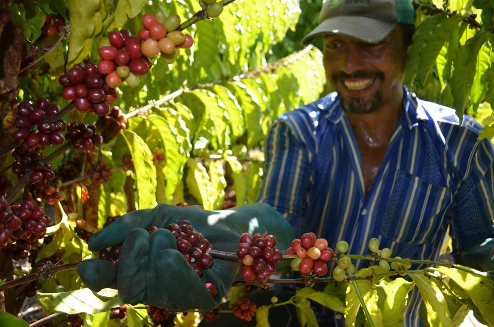
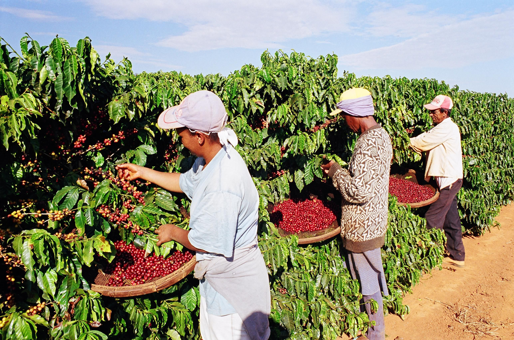
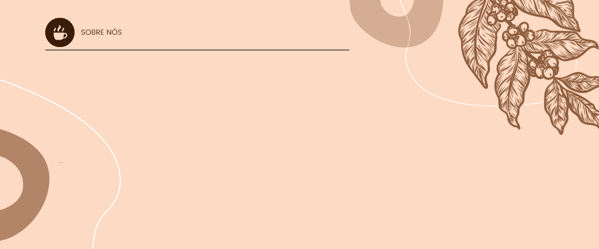

![   A Boutin Coffee nasceu para trazer qualidade e alto teor de cafeína em um só produto. É uma novidade no mercado de cafés diferenciados, que se dividem entre os especiais – de origem 100% arábica, mas com baixa quantidade de cafeína – e os extra-fortes, cuja torra excessiva implica em perda no paladar. Para resolver a questão, a Boutin Coffee combinou café de alta qualidade e energia. O resultado é um café mais potente, com 220% a mais de cafeína do que a bebida comum, sem abrir mão do aroma e sabor de um produto refinado.](imagens/download.jpg){kind=link}
.png){kind=link}

Oque nos move?
A paixão por fazer tudo isso cada vez melhor!
Cuidar com carinho desde a escolha das mudas, da preparação da terra, até a seleção do grão e da torra perfeita pra você. A nossa política de sustentabilidade é reflexo do respeito que temos pelo meio ambiente, pelas pessoas e pelos recursos naturais, porque é isso que nos mantém conectados com as nossas origens, e nos permite continuar sempre em busca do melhor café para você.